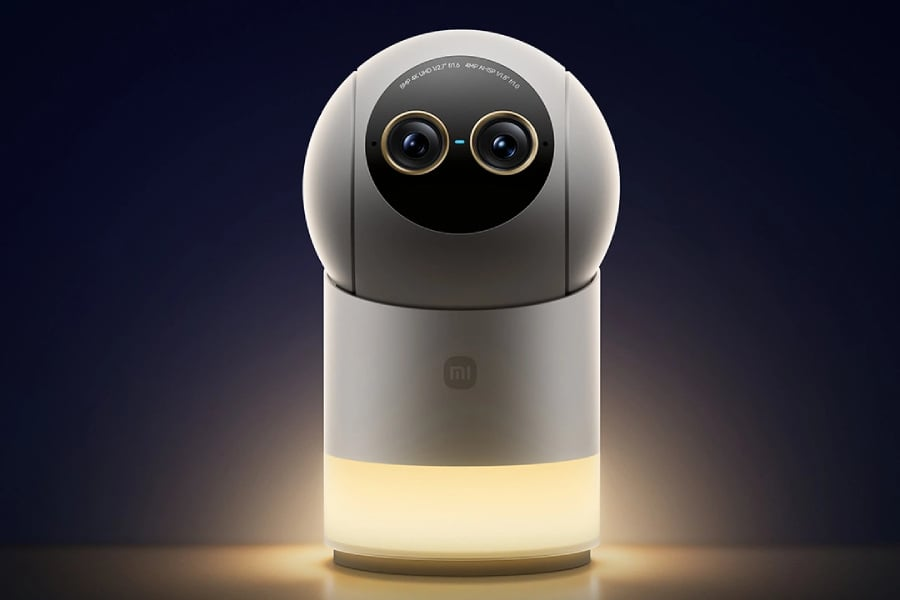
THE TECH EDIT
기술의 변화, 매일 한눈에.
카메라 · 스마트폰 · AI, 해외 테크 소식을 모아 전합니다.
최근 발행2026-09-18
새로 들어온 소식
LATEST STORIES최신 뉴스
전체 3,078개 기사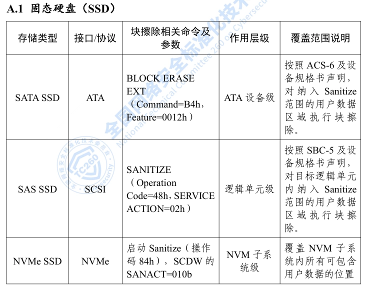
OPPO, Xiaomi, vivo, Honor, Samsung, Huawei 등 스마트폰 제조사, 중고 스마트폰 데이터 삭제 및 식별 가이드라인 초안 작성
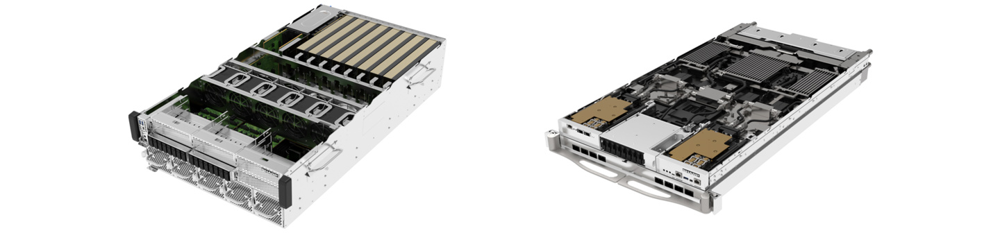
샤프, Fujifilm과 협력하여 NVIDIA RTX PRO 6000 Blackwell GPU 탑재 AI 서버 출시
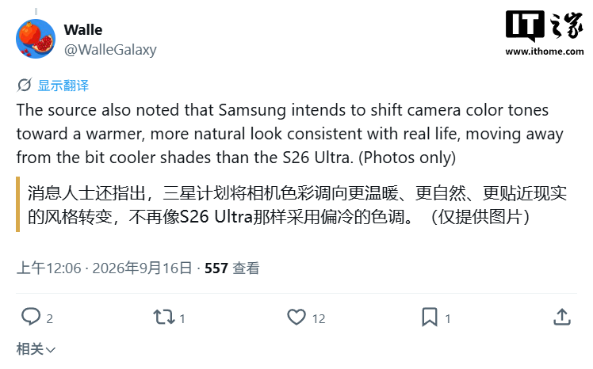
Samsung Galaxy S27 Ultra, 촬영 알고리즘 조정으로 사진 색감 더 따뜻해질 전망
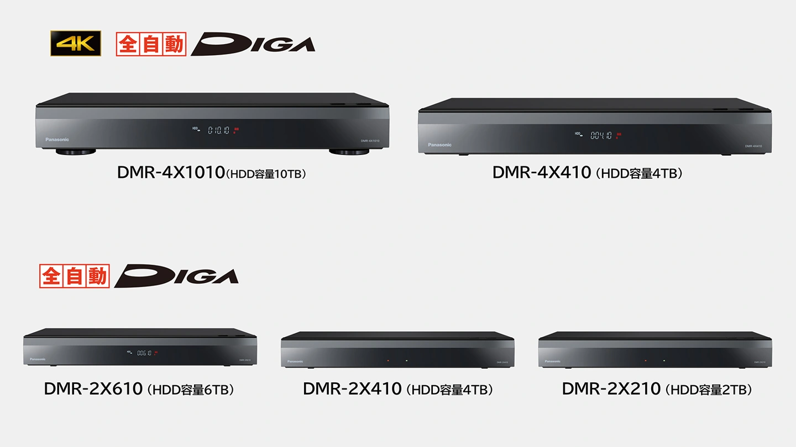
Panasonic, 클라우드 녹화 기능 지원하는 신형 블루레이 레코더 출시

Oppo Find X10 고해상도 카메라 샘플, 9월 22일 출시 앞두고 공개
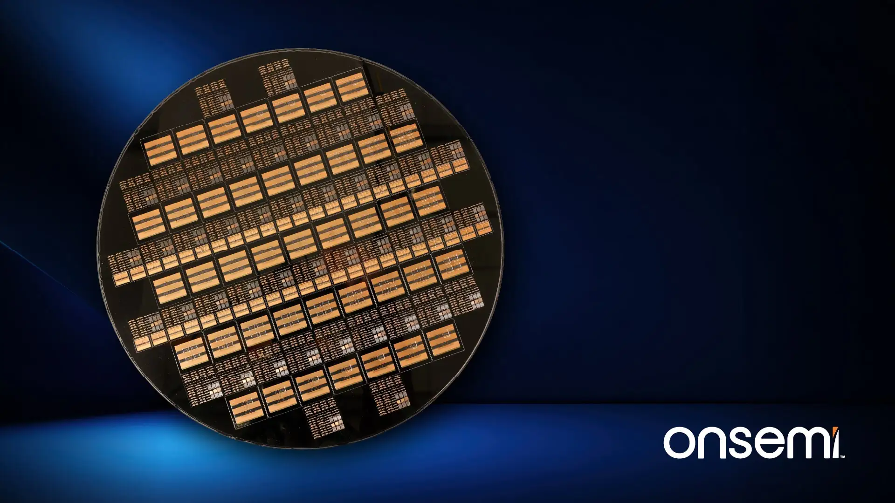
온세미, 실리콘 웨이퍼 캐리어 패키징 임베디드 전력 플랫폼 출시: 3~5배 전력 밀도 달성
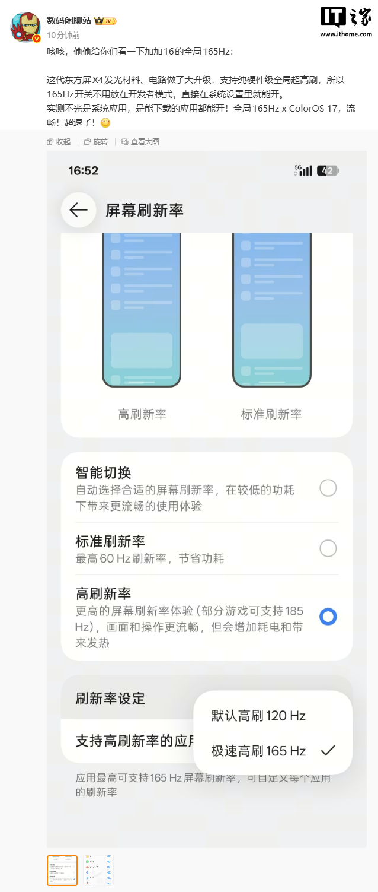
업계 최초, OnePlus 16 스마트폰 165Hz 초고주사율 "다운로드 가능한 모든 앱 실행 가능"
일본과 미국, 일본 투자 및 글로벌파운드리 운영 모델로 웨이퍼 공장 협력 논의 중
아이폰 18 Pro Max vs 픽셀 11 Pro XL: 1,300달러 플래그십 스마트폰 대결
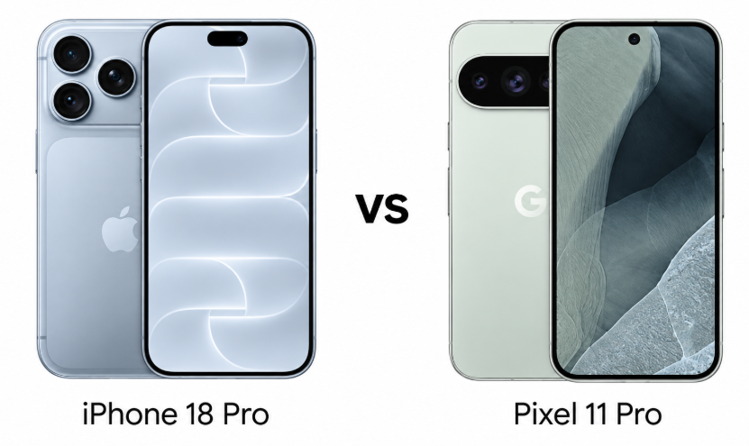
아이폰 18 Pro vs 픽셀 11 Pro: 애플과 구글 중 더 나은 프로 플래그십 스마트폰은?
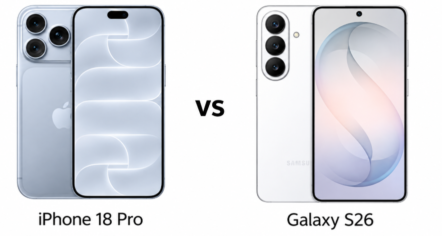
아이폰 18 Pro vs 갤럭시 S26: 사양, 카메라, 배터리, 가격
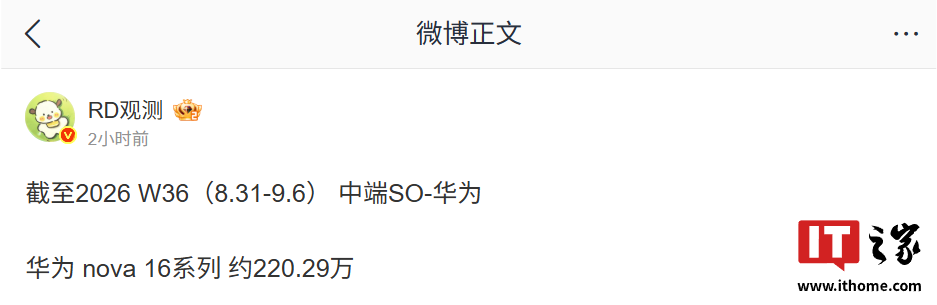
Huawei nova 16 시리즈 스마트폰 판매량 200만 대 돌파: Kirin 8020/9010S 프로세서 탑재, 2,499위안부터
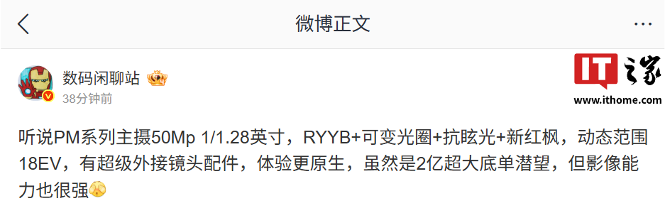
Huawei Mate 90 Pro Max 시리즈 스마트폰 카메라 솔루션 유출, 슈퍼 외장 렌즈 액세서리도 있을 것으로 예상

Huawei Mate 80 시리즈 스마트폰, HarmonyOS 7.0.0.107SP8 업데이트로 카메라, 제어 센터 등 사용 경험 최적화
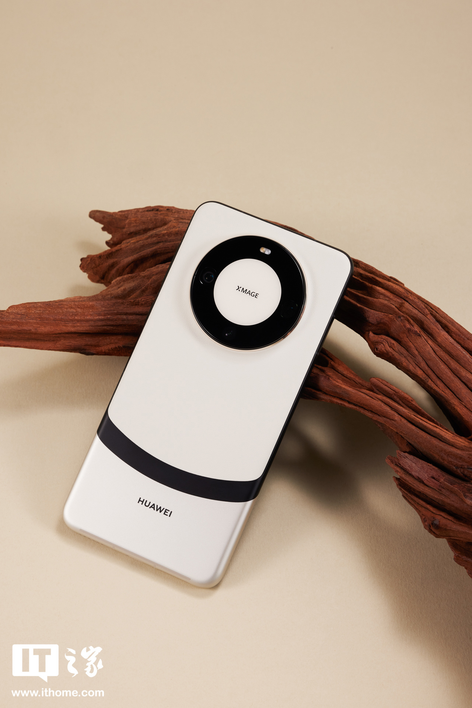
HarmonyOS 7 화웨이 팬 베타 버전의 놀라운 기능: Huawei Mate 60 시리즈 스마트폰, 눈동자 스크롤 기능 추가 지원

아이폰 듀오 출시 후 갤럭시 Z 폴드 8 판매량 증가
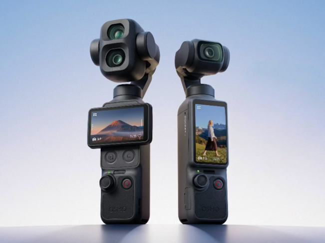
DJI Pocket 4/4P 짐벌 카메라 펌웨어 업데이트: HDR 직출 추가, 자동 무선 클라우드 업로드 지원
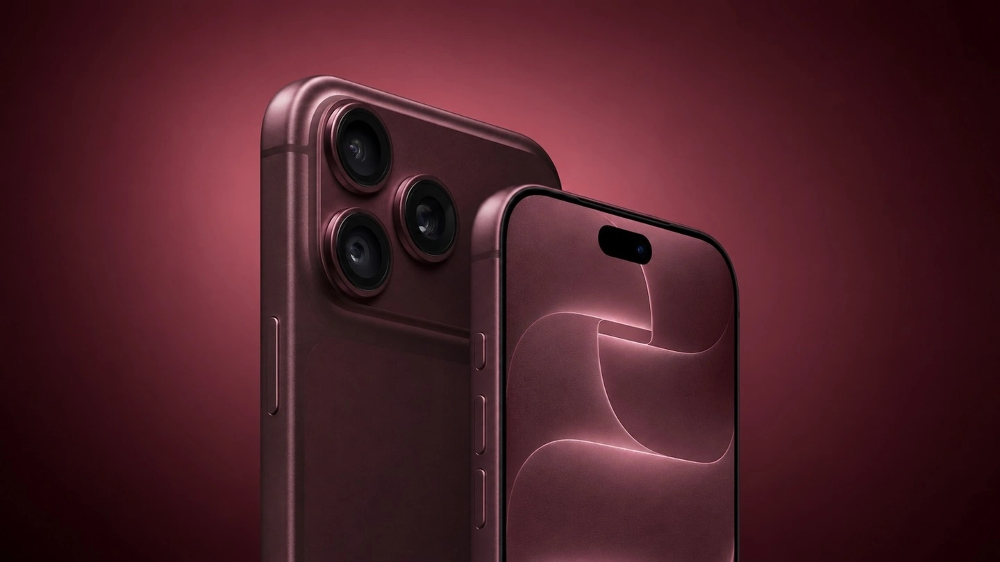
Apple, Samsung의 2027년 메모리 가격 인상 수용, iPhone 등 제품 가격 또 오를 수도
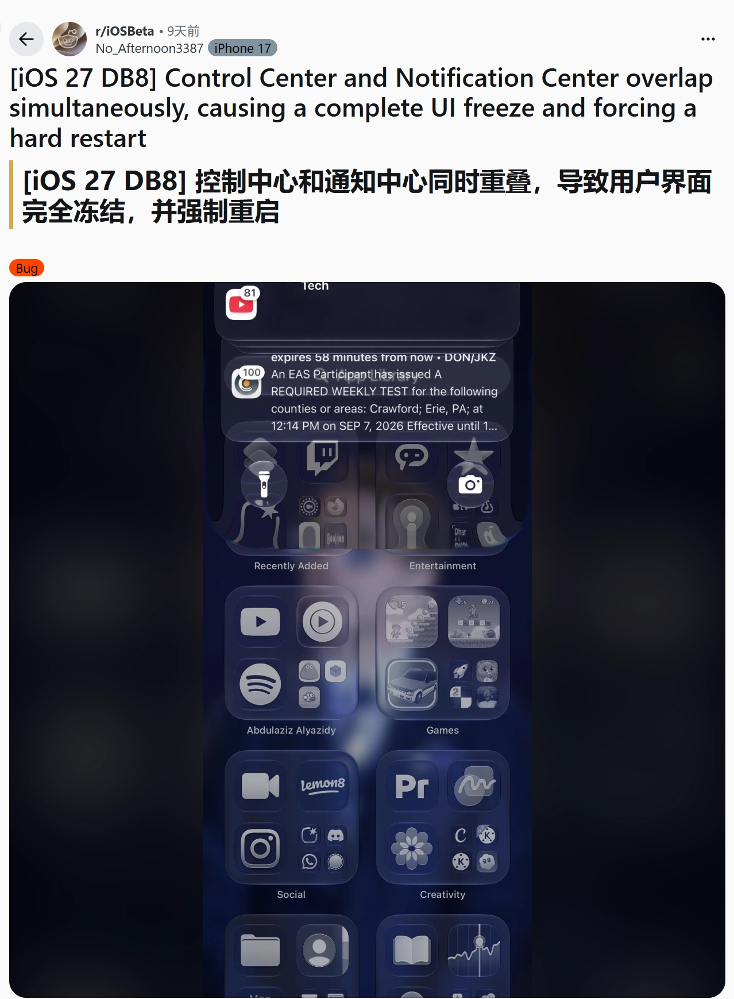
Apple iPhone 17 등 일부 사용자, iOS 27 알림 센터 문제 제기
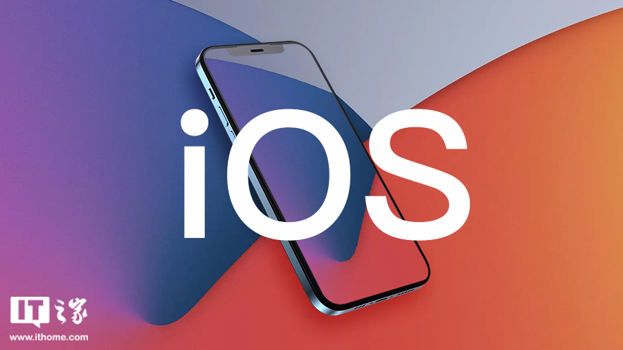
Apple, iOS 27.2 첫 베타 버전 공개: iPhone Duo를 위해 27.1 건너뛰고 중국 사용자에게 저장 공간 덮어쓰기 삭제 옵션 제공
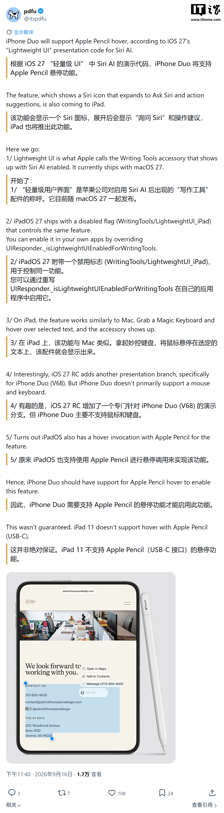
Apple 최초의 폴더블 iPhone Duo, "경량 UI" 지원 및 Apple Pencil 호버링으로 Siri AI 트리거 가능성
검색 결과가 없습니다
다른 검색어를 입력하거나 필터를 초기화해 보세요.